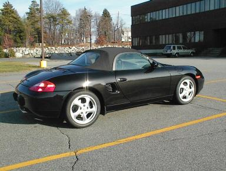
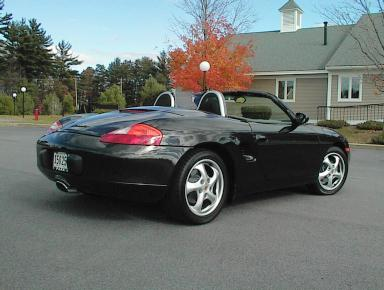

Specs: 1999 Porsche Boxster (type 986), built in Valmet, Finland (9/98), metallic black paint, graphite grey interior, sport touring package (includes 17" wheels, aluminum dials, brake handle, shifter, door sills, 6 CD changer, hi fi stereo, painted Porsche crest on the wheels).
These pictures were taken with a HP Photosmart Camera C20.
Here's a pic of the Boxster in the Avici Systems, Inc. parking lot in Billerica, MA. This was taken on December 6, 1998 -- one day before one of our big development milestones. Lots of engineers showed up at work on Sunday to finish up and meet the deadline which was the following day. It was 70 degrees that day (yes, in December!). This pic shows how big the backend is.

Here's a sideview pic; notice my shadow on the lower left.
Here's a picture of what the car looked like when I visited the dealer (October 28 9am) -- the day before I took delivery. The workers were prepping the car for delivery. Of course I instantly was overjoyed and couldn't believe it was my car. BTW, that's not me in the picture.
I took some pics of the rear left suspension because it was so clean.
This one was on a fall day at a place called "East Point", Merrimack, NH.
Graphite grey interior with aluminum shifter, break handle, and dial.
I took the cabriolet top down to nicely expose the silver painted rollbars.
You can also see the center exhaust pipe which sports the extended metal
pipe. The nice foliage in the background added some nice color to
the photo.

It's a good thing the car was only a few days old because the front plate had not been put on -- and that's not legal in NH.
After my first week of research, I got hold of some information about cleaning the Boxster -- this included removing all of the wheels and cleaning the inside of the rims. What a pleasure to view such pristine cleanliness.
This is the Colgan bra I use; notice that the top third of it that fits on the hood can be removed so that the car doesn't look too much like it has a bra on it. I put it on here just to try it out.
Here's where I removed the top third of it off -- exposing the badge and making it less evident that there is a bra present. Note how the bra actually traces the lines of the Boxster front end. My ex-boss's M Roadster is nearby
I have observed that Boxsters' speedometers have been known to be inaccurate. I have obtained the following data and have built the following spreadsheet and graph to see if there is anything interesting to observe about the level of error as a function of speed -- actually, mostly because if I want to brag to my friends about how fast I have gone in a Boxster, I'd hate to tell them that the speedometer is off by x percent and so I really wasn't going that fast, etc.
So here's the graph below. If any Boxster drivers have data at the high end speed ranges, please let me know (i.e., send me email with your data and I will update the graph as appropriate).
Note the negative slope (i.e., as speed increases, percent error drops). Maybe at high speeds, the error is very low which means that I can brag about high speed and still know that I really when that fast ;-)
Note: I got most of the data from someone I corresponded with from Porsche Pete's Boxster Board ; he prefers to remain anonymous -- but I thank him just the same (as he seemed to live on the edge when taking the measurements -- pun intended).